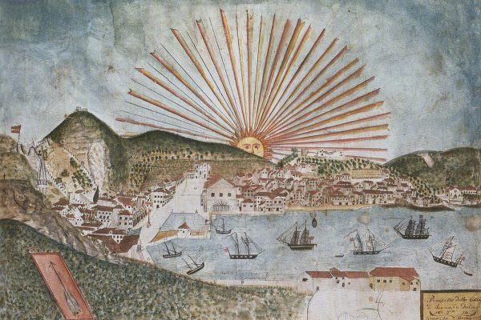
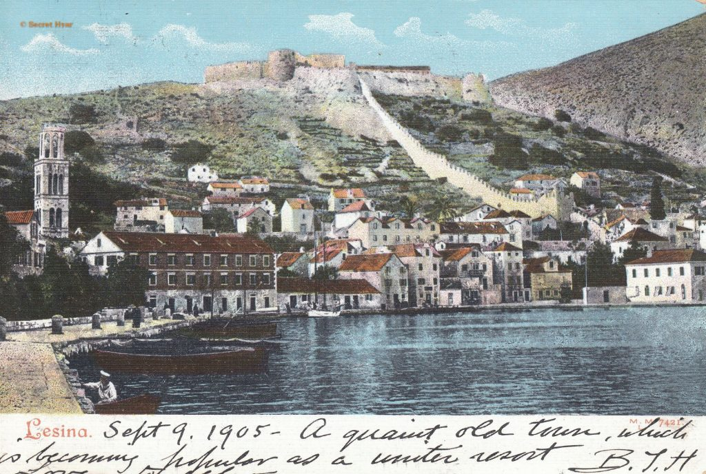

Short history
Since prehistoric times, people have lived on the island of Hvar. Archaeologists discovered life traces on the island of Hvar dating back to 3500 BC. Kr. According to the findings in the Grapeva and Markova caves, the Hvar culture (3500 - 2500 BC) was a distinct prehistoric culture.
The island of Hvar entered written history in 385/384 BC, when Greeks from the Aegean Sea's island of Paros established a colony there on what is the site of today's Old Town (Pharos).
However, a year after the Pharos colony was founded, the natives attacked the young Greek colony. Together, they left for Pharos after calling for assistance from the locals of the nearby country. The Greeks, unable to defend themselves, turned to Lissos, the capital of Dionysius' governorship, for assistance.
Up until around 235 BC, Pharos led a free life before coming under the control of the state of Illyria. The city was taken over by the Romans in 229 BC Kr. during the First Illyrian War and placed under the rule of Demetrius Hvaranin, a former Illyrian general. In 219 BC the Romans began the Second Illyrian War against him, during which Demetrius fled to Macedonia under Philip V after being defeated at Pharos.

Late antiquity saw no habitation of the modern town of Hvar; it was only during the Middle Ages that Stari Grad was displaced as the capital of the island and Hvar became its principal settlement.
The inhabitants of Hvar decided to submit to Venetian rule in February 1278, following the lead of the nearby towns. Hvar Island rejoined the Croatian-Hungarian state in the middle of the fourteenth century. The last of the aforementioned was even crowned Croatian king in Zadar in 1403, but in 1409, after concluding that further resistance was pointless, he sold his rights to Dalmatia to Venice. Dalmatian cities began to accept Venetian rule one by one in 1420.
However, a Turkish fleet commanded by Uluz-Alija and Karakoca attacked the city on August 19, 1571. With 73 ships, the Ottomans arrived in front of Hvar. In addition to all the churches and monasteries.
The majority of homes and public structures were destroyed or damaged. However, Hvar bounced back from the devastation at the end of the 16th century.
The Republic of Venice was in decline. Napoleon Bonaparte completed it with his victories in northern Italy in 1796. On July 26, 1797, Austria took control of Hvar. Hvar was governed by Austria after being ruled by the Venetians for centuries. The island was ruled by the French from 1806, though, until 1813, when Austrian rule was restored. Until the end of World War I, Austria ruled the island.

The island was occupied by the Italians in 1919, and they held it until the Rapala Agreement was signed in 1921, when it passed into the control of the newly established Kingdom of Serbs, Croats, and Slovenes, which later became the Kingdom of Yugoslavia.
Hvar, along with the rest of Croatia, became a part of communist Yugoslavia following World War II. Between 1945 and 1991, Hvar saw the construction of a number of hotels, as well as improvements to the town's water and sewage systems. Hvar did not experience enemy shelling during the Homeland War.
Hvar welcomes the new millennium with renewed optimism for the future. As a result, Hvar once again rose to the top of Croatia's tourist destinations.